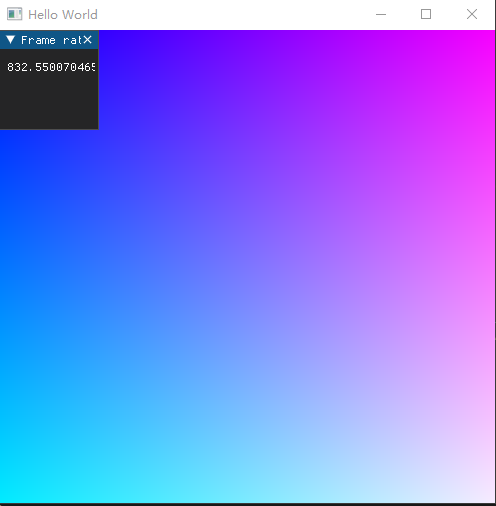

快速开始
了解LuisaCompute中的概念
Context
在开始工作时，我们首先要创建一个Context，它是一切的基座，用于处理程序路径，多设备(Device)管理等基础工作。
Device
为了支持一个硬件/软件设备，我们需要创建一个Device类，一个Device通常代表其指向一个硬件设备，但同时创建的多个Device也可能可以指向同一个硬件设备，这取决于您的平台要求，同时创建多个Device是被允许的。
Stream
现代流处理器设备通常是将需要执行的计算积攒下并集中提交到硬件，这会带来更高的执行效率并允许LC对任务进行调度优化，因此我们引入Stream概念，这可以用类似的伪代码表达逻辑：
// 在stream中提交a, b, c三个任务
stream.dispatch(a)
stream.dispatch(b)
stream.dispatch(c)
// 此时任务并没有开始执行
stream.execute()
// 此时任务开始异步的执行
stream.synchronize()
// 当前线程在此语句时等待任务完成
Kernel & Callable
一个可以被调度的最小的计算单位称之为Kernel，这通常是由DSL编写的一个独立的程序，而其本体也是一个函数，类似于main函数，而Callable则相当于其他自定义的函数，而Kernel本身是不可以直接调用的，而是需要经过Device提供的编译方法，编译后生成Shader才可以给当前的Device使用
Shader
由于不同设备间不能够通用Kernel的编译结果(类似于Windows平台的exe不能够在Linux平台运行)，我们必须储存一份Kernel编译后的结果Shader，使用伪代码表达此逻辑：
// 定义一个Kernel
int kernel (int a, int b) {
return a + b;
}
// 编译成Shader
shader = device.compile(kernel);
选择计算后端
LuisaCompute目前支持CUDA, DirectX-12, Metal后端，每一种后端都有平台的限制和性能差距，我们会在官方网站提供不同后端的表现测试结果作为参考。
选择语言前端
LuisaCompute目前支持Rust, Python, C++作为前端语言，我们会提供这些语言的案例。同时由于语言之间各有长短，因此我们可以同时使用多种语言用于开发，如Python拥有编译速度快，类型系统动态的优势，可以用于编写Kernel，而对性能要求较高的运行时代码，则可以使用C++/Rust编写。在文档中我们会介绍这类操作的流程。
Python
Hello world
在确保安装步骤完成以后，我们就可以开始编写第一个Python案例了:
from luisa import *
@func
def write_texture(tex):
set_block_size(16, 16, 1)
index = dispatch_id().xy
uv = (float2(index) + 0.5) / float2(dispatch_size().xy)
tex.write(index, float4(uv, 1, 1))
res = 512, 512
init()
tex = Texture2D(*res, 4, float)
write_texture(tex, dispatch_size=(*res, 1))
execute()
gui = GUI("Hello World", res)
while gui.running():
gui.set_image(tex)
gui.show()
以上这一段代码可以绘制一个分辨率为512x512的渐变颜色的窗口:

在这个案例中，init()会初始化一个全局的后端Device，这个后端的选择取决于当前目录中有哪些后端，当然我们也可以手动选择，@func标记的函数即为kernel，而在第一次调用write_texture时，系统会自动为默认的Device编译一份shader并录制这条命令，execute()则会执行上面的命令，最后在gui阶段则会等待执行的同步并打印计算内容，这完整的表达了上述基本流程。
C++
Hello world
在确保安装步骤完成以后，我们就可以开始编写第一个C++案例了（请确保enable_dsl选项已经被开启。否则在C++中将无法编写Kernel）:
#include <stb/stb_image_write.h>
#include <runtime/device.h>
#include <runtime/stream.h>
#include <dsl/syntax.h>
#include <dsl/sugar.h>
using namespace luisa;
using namespace luisa::compute;
int main(int argc, char *argv[]) {
Context context{argv[0]};
if (argc <= 1) {
return -1;
}
Kernel2D kernel = [](ImageVar<float> tex) {
set_block_size(16, 16, 1);
UInt2 index = dispatch_id().xy();
Float2 uv = (make_float2(index) + 0.5f) / make_float2(dispatch_size().xy());
tex.write(index, make_float4(uv, 1.0f, 1.0f));
};
Device device = context.create_device(argv[1]);
Shader shader = device.compile(kernel);
Stream stream = device.create_stream();
constexpr uint32_t width = 512;
constexpr uint32_t height = 512;
vector<std::byte> pixels;
pixels.resize(width * height * 4);
Image<float> tex = device.create_image<float>(PixelStorage::BYTE4, width, height);
stream
<< shader(tex).dispatch(width, height)
<< tex.copy_to(pixels.data())
<< synchronize();
stbi_write_png("hello_world.png", width, height, 4, pixels.data(), 0);
return 0;
}
相比于Python，C++中暴露的可操作性细节更多，在运行时，请确保任意一个后端的名字以参数的形式被传入，这些细节完整的展示了LC的设计理念，使用现代C++中的lambda表达式语法，构建一个kernel，创建device，stream，执行kernel并打印结果，运行完毕后bin目录下应会有一个hello_world.png:
以上案例或许会成为您入门LC的第一步，想要阅读更多案例，可以通过下载仓库中的tutorial目录，我们通常会将案例的每一步写成注释方便学习。